- Eng, C., Godwin, K., & Fisher, A. (2020). Keep it simple: streamlining book illustrations improves attention and comprehension in beginning readers. Nature Science of Learning, 5(14), 1-10. https://doi.org/10.1038/s41539-020-00073-5. [Open Access]
- Eng, C., Godwin, K., & Fisher, A. (2020). When Less is More in an Increasingly Busy World. Nature: Behind the Paper. [https://go.nature.com/3jW9Hwl]
- Eng, C., *Pocsai, M., *Calkosz, D., Fishburn, F., Thiessen, E., & Fisher, A. (2020). Adaptations of Executive Function and Prefrontal Cortex Connectivity Following Exergame Play in 4- to 5-year old Children. The 42nd Annual Conference of the Cognitive Science Society, pp. 57-63, Toronto, Canada: Cognitive Science Society. [Open Access]
- Eng, C., *Calkosz, D., *Yang, Y., *Williams, C., Thiessen, E., & Fisher, A. (2020). Enhancing Brain Plasticity and Cognition utilizing Immersive Technology and Virtual Reality Contexts for Gameplay. The International Conference of the Immersive Learning Research Network: Vision 20/20 Hindsight, Insight, and Foresight in XR and Immersive Learning, pp. 395-398. https://doi.org/10.23919/iLRN47897.2020.9155120 [Open Access] [Video Abstract]
- Eng, C. M., Tomasic, A. S., & Thiessen, E. D. (2020). Contingent responsivity in E-books modeled from quality adult-child interactions: Effects on children’s learning and attention. Developmental Psychology, 56(2), 285–297. https://doi.org/10.1037/dev0000869 [Open Access]
- Eng, C., *Pocsai, M., *Williams, N., *Calkosz, D., Thiessen, E., & Fisher, A. (2019). Exergame Training of Executive Function in Preschool Children: Generalizability and Long-term Effects. The 41st Annual Conference of the Cognitive Science Society, pp. 3266, Montréal: Canada Cognitive Science Society. [Open Access]
- Godwin, K., Eng, C., Murray, G., & Fisher, A. (2019). Book Design, Attention, and Reading Performance: Current Practices and Opportunities for Optimization. The 41st Annual Conference of the Cognitive Science Society, pp. 1851-1857, Montréal: Canada, Cognitive Science Society. [Open Access]
- Eng, C., Tomasic, A., & Thiessen, E. (2018). Contingent Responsiveness in Digital Storybooks: Effects on Children’s Comprehension and the Role of Individual Differences in Attention. The 40th Annual Conference of the Cognitive Science Society, pp. 342-347, Madison, WI: Cognitive Science Society. [Open Access]
- Eng, C., Godwin, K., *Boyle, K., & Fisher, A. (2018). Effects of Illustration Details on Attention and Comprehension in Beginning Readers. The 40th Annual Conference of the Cognitive Science Society, pp. 336-341, Madison, WI: Cognitive Science Society. [Open Access]
- Eng, C., Tomasic, A., & Thiessen, E. (2018). Contingent Responsiveness in Digital Books: Effects on Children’s Comprehension and Attention. The 48th Jean Piaget Society: The Dynamics of Development: Process, Inter-Action, & Complexity, Amsterdam, The Netherlands. [Open Access]
- Godwin, K., Eng, C., & Fisher, A. (2017). Gaze Shifts between Text and Illustrations are Negatively Related to Reading Fluency in Beginning Readers. The 39th Annual Conference of the Cognitive Science Society, pp. 415-420, London, UK: Cognitive Science Society. [Open Access]
- Eng, C. (2011). DeVry vs. PSU: The Underlying Messages that Influence Consumers. Penn Statements, 20, 12-18, State College, PA.
Publications:
*Denotes undergraduate student or research assistant mentored- Eng, C. & McDonald, M. (2020). Cognitive Skills, Language Development, and The Brain: Employing the Neuroscience of Learning to Create More Effective VR/AR/XR Experiences. Educators in VR: Integrating Spatial Technologies into Education and Training, AltspaceVR Platform, Virtual Reality. [Recorded Presentation]
- Eng, C., *Pocsai, M., Fishburn, F., *Williams, N., *Calkosz, D., Thiessen, E., & Fisher, A. (2020). Effects of Physically-active Digital Games on Executive Function and Resting Prefrontal Cortex Connectivity in Children. The Annual Interdisciplinary Innovation with Impact Exhibition, Pittsburgh, PA.
- Eng, C., Ochoa Fernández, C. J., & Alexander, K. (2020). The Neuroscience of Learning in Virtual and Augmented Reality Contexts. VRARA Education Committee: Best Practices, Guidelines, and Call to Actions for Education.
- Eng, C., Johnson-Glenberg, M., Brenner, C., & Alexander, K. (2020). Enhanced Learning Through Multimodal Play: Brain Plasticity Applications through the Intersection of Cognitive Neuroscience, Prevention Science and Educational Psychology. Invited Speaker at the Career Professional Development in VR Series: How Active VR Games Contribute to Learning Symposium. ENGAGE Platform, Virtual Reality. [Blog Post by C. Brenner]
- Bell, M.A., Broomell, A.P.R., & Eng, C. (2020). EEG power and coherence show sex differences in brain development across the first two years [poster accepted but not presented due to COVID-19 pandemic]. American Psychological Association, Washington DC.
- Eng, C. (2019). Education and the Brain, a Bridge Not Too Far: Game-Based Assessment and Neuroplasticity. Invited Speaker at the National Science Foundation (NSF)-sponsored Conference: Game-based Assessment: An Interdisciplinary Workshop Integrating Organizations, Education, and Assessment, Minneapolis, MN.
- Eng, C., *Pocsai, M., *Williams, N., *Calkosz, D., Thiessen, E., & Fisher, A. (2019). Effects of Cognitive-Motor Training on Executive Function and Resting Prefrontal Cortex Connectivity in Preschool Children: an fNIRS Study. Presentation at the Annual Society for Neuroscience Meeting, Chicago, IL.
- *Tsegai-Moore, A., Fisher, A., & Eng, C. (2019). Cognitive Game-based Assessment Performance, Educational Outcomes, and Prefrontal Cortex Connectivity. Presentation at the Annual Biomedical Research Conference for Minority Students, Anaheim, CA.
- *Stanley, O., *Boyle, K., Fisher, A., & Eng, C. (2019). The Effects of Book Design on Beginning Reader’s Visual Attention and Reading Comprehension: An Eye-Tracking Study. Presentation at The Eberly Center for Teaching Excellence and Educational Innovation’s Teaching and Learning Summit, Pittsburgh, PA.
- Eng, C., *Pocsai, M., *Williams, N., *Calkosz, D., Fisher, A., & Thiessen, E. (2019). Effects of Exergame Training on Executive Function and Resting Prefrontal Cortex Connectivity in Preschool Children: an fNIRS Study. Presentation at the International Society for Developmental Psychobiology, Chicago, IL.
- Eng, C. (2019). The Effects of Cognitive-Motor Training on Resting State Prefrontal Cortex Connectivity and Executive Function in Preschool Children. Presentation at the University of Pittsburgh Graduate School of Public Health Training Grant Retreat in Population Neuroscience, Pittsburgh, PA.
- Eng, C., Godwin, K., *Boyle, K., & Fisher, A. (2019). Effects of Book Design on 1st and 2nd Grade Children’s Attention and Learning. Presentation at the Society for Research in Child Development Meeting, Baltimore, MD.
- Eng, C., Godwin, K., *Boyle, K., & Fisher, A. (2019). Effects of Book Design on Attention and Reading Comprehension Among Children Ages 6 to 8: An Eye-Tracking Study. Presentation at the Annual Interdisciplinary Innovation with Impact Exhibition, Pittsburgh, PA.
- *Moron, S., *Noll, E., *Zhang, K., *Fulton, E., *Williams, N., *Calkosz, D., *Anjur, K., *Tan, B., *Ang, N., & Eng, C. (2019). Enhancing Executive Function in Preschool Children: Generalizability and Long-term Effects of Cognitive-Motor Training. Presentation at Carnegie Mellon University’s Meeting of the Minds Undergraduate Research Symposium, Pittsburgh, PA.
- *Williams, N., *Calkosz, D., *Anjur, K., *Mester, M., *Lee, E., & Eng, C. (2019). Exercise-Based Cognitive Flexibility Training in Virtual Reality. Presentation at Carnegie Mellon University’s Meeting of the Minds Undergraduate Research Symposium, Pittsburgh, PA.
- *Kim, J., *Wen, Y., *Yoon, J., *Zhao, W., & Eng, C. (2019). Utilizing Infant EEG Brain Patterns to Predict Childhood ADHD. Presentation at Carnegie Mellon University’s Meeting of the Minds Undergraduate Research Symposium, Pittsburgh, PA.
- *Cao, G., *Kim, Y., *Shi, X., *Yannekis, T., & Eng, C. (2019). Utilizing a Random Forest Learning Algorithm to Predict Whether Streamlined Books Improve Young Students' Reading Comprehension. Presentation at Carnegie Mellon University’s Meeting of the Minds Undergraduate Research Symposium, Pittsburgh, PA.
- Fisher, A., Eng, C., Godwin, K., (2019). The Role of Attention Regulation in Reading Comprehension in Beginning Readers. Learning in a Noisy World: Regulating Children’s Attention at Home and at School Paper Symposium at the Society for Research in Child Development Meeting, Baltimore, MD.
- Godwin, K., Murray, G., Todaro, R., Eng, C., Wildrick, A., Fisher, A. (2019). Design Optimization: Exploration of Book Design and its Effect on Children’s Attention, Decoding, and Comprehension. Presentation at the Society for Research in Child Development Meeting, Baltimore, MD.
- Eng, C., Godwin, K., *Boyle, K., & Fisher, A. (2018). Effects of Book Design on Children’s Attention Allocation and Learning: An Eye-tracking Study. Presentation at the International Society for Developmental Psychobiology Meeting, San Diego, CA.
- *Pocsai, M., Eng, C. (2018). An Exercise-based Interactive Game to Aid Cognition in Young Children. Presentation at The Eberly Center for Teaching Excellence and Educational Innovation’s Teaching and Learning Summit, Pittsburgh, PA.
- Godwin, K., Eng, C., Todaro, R., Murray, G., & Fisher, A. (2018). Examination of the Role of Book Layout, Executive Function, and Processing Speed on Children’s Reading Fluency and Comprehension. Presentation at the Cognitive Science Society Annual Meeting, Madison, WI.
- Eng, C., Tomasic, A., & Thiessen, E. (2018). The Effects of an Interactive Digital Storybook on Children’s Story Comprehension and the Role of Individual Differences in Attention. Presentation at the Annual Innovation with Impact Exhibition, Pittsburgh, PA.
- Eng, C., *Patton, L.A., & Bell, M.A. (2018). Infant EEG Power and Coherence: Potential Indicators of Childhood AD/HD. Presentation at The Biennial International Conference on Infant Studies, Philadelphia, PA.
- Fisher, A., Eng, C., & Godwin, K. (2018). Attention Regulation and Learning in Beginning Readers. Presentation at the 6th Biennial Conference of the International Mind, Brain and Education Society, Los Angeles, CA.
- *Williams, N., *Tan, B., *Ang, N., *Anjur, K., *Calkosz, D., & Eng, C. (2018). An “Exergame” Intervention to Aid Inhibitory Control Development in Preschool Children. Presentation at Carnegie Mellon University’s Meeting of the Minds Undergraduate Research Symposium, Pittsburgh, PA.
- *Calkosz, D., *Tan, B., *Ang, N., *Lee, Y., & Eng, C. (2018). Optimizing Data Collection and Assessment of Inhibitory Control in Preschool Children. Presentation at Carnegie Mellon University’s Meeting of the Minds Undergraduate Research Symposium, Pittsburgh, PA.
- *Tang, G., *Tan, B., & Eng, C. (2018). Detecting Signs of ADHD in Infancy. Presentation at Carnegie Mellon University’s Meeting of the Minds Undergraduate Research Symposium, Pittsburgh, PA.
- Eng, C., Tomasic, A., & Thiessen, E. (2017). The Effects of an Interactive Digital Storybook on Children’s Story Comprehension and the Role of Individual Differences in Attention. Presentation at the Cognitive Development Society Conference, Portland, OH.
- Godwin, K., Eng, C., & Fisher, A. (2017). Effect of Proximity of Illustrations to Text on Beginning Readers Fluency and Comprehension. Presentation at the Cognitive Development Society Conference, Portland, OH.
- Eng, C., *Boyle, K., & Fisher, A. (2017). Illustration Design and Beginning Readers’ Attention Allocation and Comprehension. Presentation at The Eberly Center for Teaching Excellence and Educational Innovation’s Teaching and Learning Summit, Pittsburgh, PA.
- Eng, C., Tomasic, A., & Thiessen, E. (2017). Traditional Storybooks vs. Interactive iPads: Effects on Infant Vocalizations. Presentation at the Jean Piaget Society Annual Meeting: Technologies & Human Development, San Francisco, CA.
- Eng, C. & Bell, M.A. (2017). Attention-related EEG and Behavior in Infancy: Potential Indicators of Childhood AD/HD. Presentation at the Annual Innovation with Impact Exhibition, Pittsburgh, PA.
- Eng, C., *Patton, L.A., & Bell, M.A. (2016). Infant Attention & Corresponding EEG: Potential Indicators of Childhood AD/HD. Presentation at the International Society for Developmental Psychobiology, San Diego, CA.
- Eng, C., *Patton, L.A., & Bell, M.A. (2016). Infant brain and behavior during an attention task: Potential biomarkers of Childhood AD/HD. Presentation at the Virginia-Nordic Precision Neuroscience Conference, Roanoke VA.
- Eng, C., Calkins, S., & Bell, M.A. (2016). Sex Differences in Attention Behavior and Attention-Related EEG at 5 and 10 Months. Presentation at the Biennial International Conference on Infant Studies, New Orleans, LA.
- Pawlo, E., Eng, C., Lakshmanan, G., DiDonato, M., Schloss, B., Bryk, K., & Berenbaum, S. (2015). Is Personality Related to Timing of Participation in Psychology Studies? Presentation at the International Honor Society in Psychology Psi Chi Research Conference, University Park, PA.
Presentations:
1 / 23
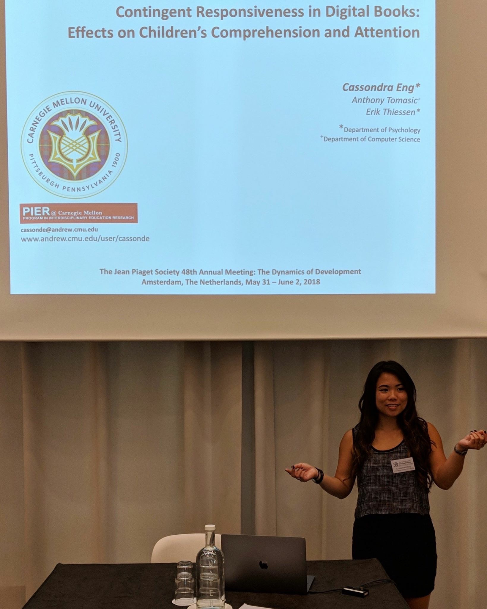
the 48th Jean Piaget Society: The Dynamics of Development: Process, Inter-Action, & Complexity, Amsterdam, The Netherlands.
2 / 23
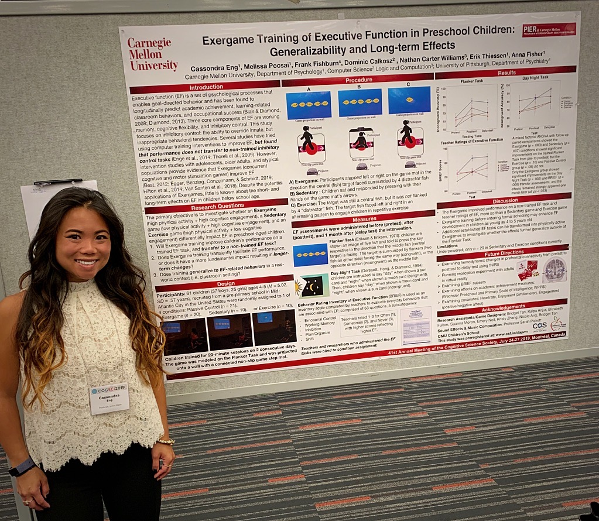
The 41st Annual Conference of the Cognitive Science Society, Montréal, Canada.
3 / 23
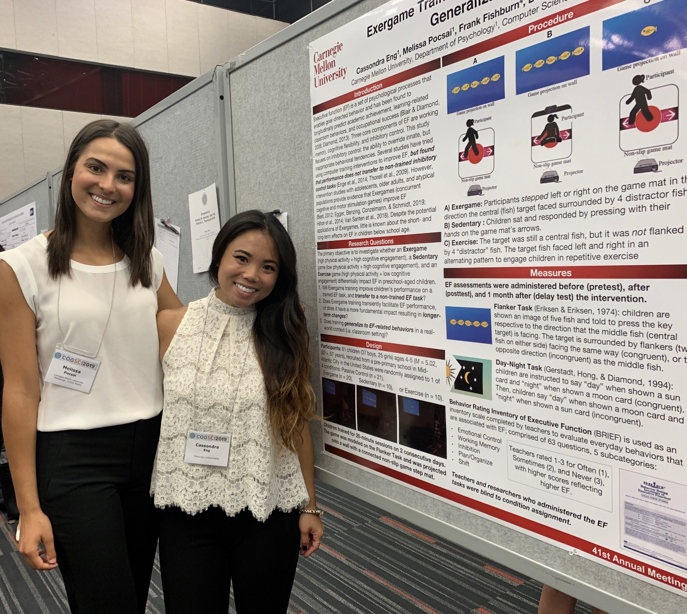
The 41st Annual Conference of the Cognitive Science Society, Montréal, Canada with Collaborator Melissa Pocsai.
4 / 23
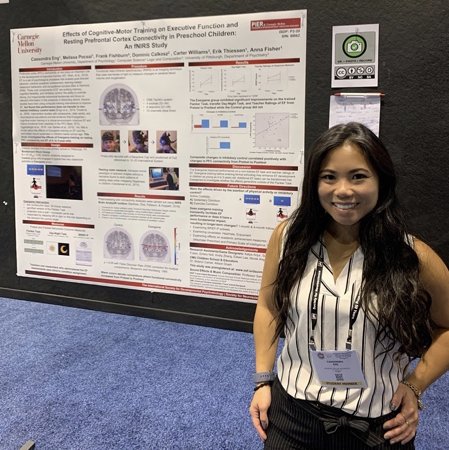
The 52nd International Society for Developmental Psychobiology Meeting/The 50th Society for Neuroscience Meeting, Chicago, IL.
5 / 23
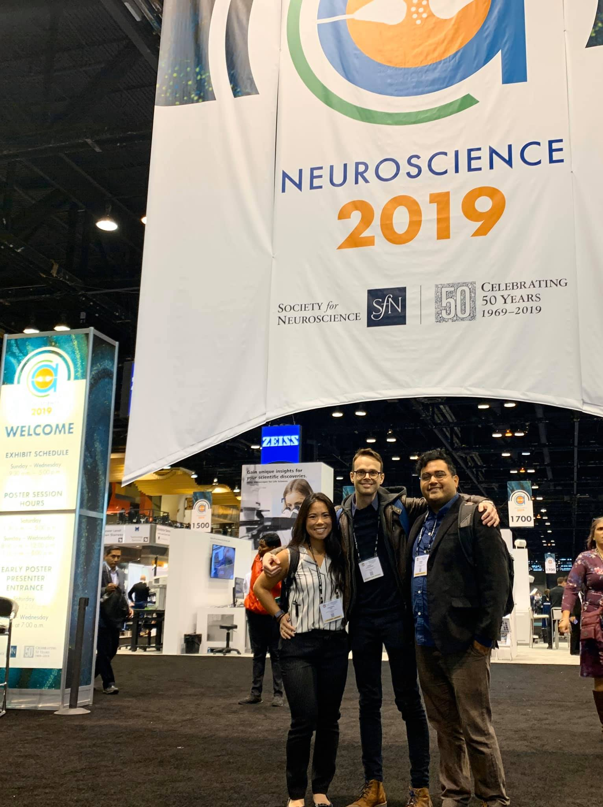
The 50th Society for Neuroscience Meeting with fellow Graduate Students Roberto Vargas and Pierre Gianferrara, Chicago, IL.
6 / 23
Invited Speaker at the National Science Foundation (NSF)-sponsored Conference: Game-based Assessment: An Interdisciplinary Workshop Integrating Organizations, Education, and Assessment, Minneapolis, MN.
7 / 23

Invited Speaker at the National Science Foundation (NSF)-sponsored Conference: Game-based Assessment: An Interdisciplinary Workshop Integrating Organizations, Education, and Assessment, Minneapolis, MN.
8 / 23

Invited Speaker at the National Science Foundation (NSF)-sponsored Conference: Game-based Assessment: An Interdisciplinary Workshop Integrating Organizations, Education, and Assessment, Minneapolis, MN.
9 / 23
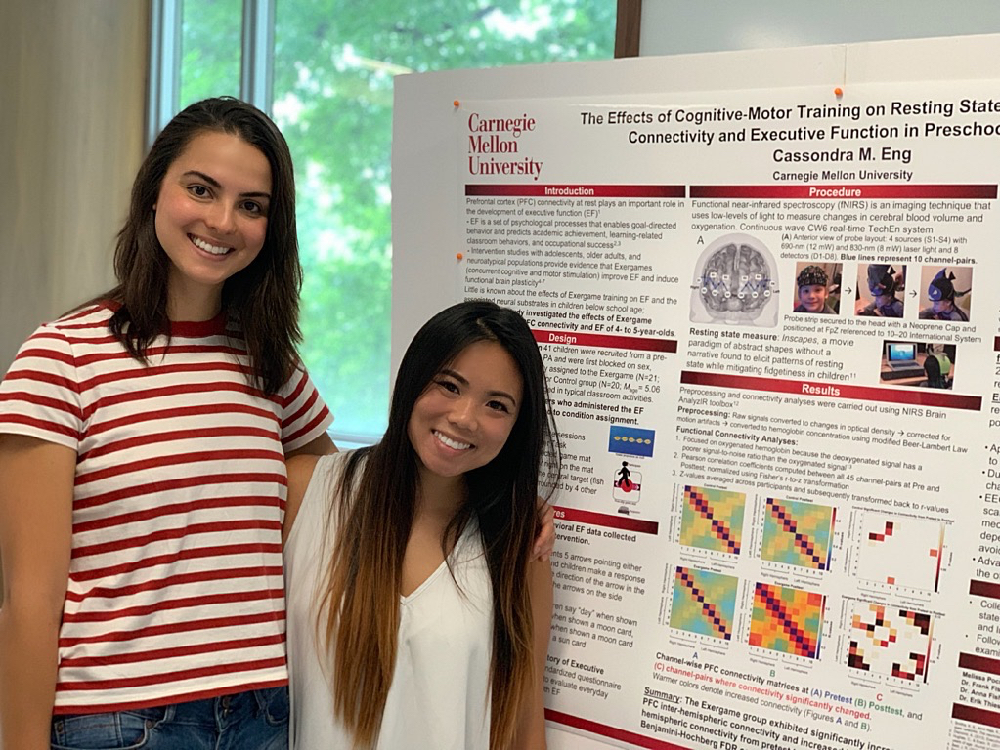
The Graduate School of Public Health Training Grant Retreat in Population Neuroscience, University of Pittsburgh with collaborator Melissa Pocsai
10 / 23
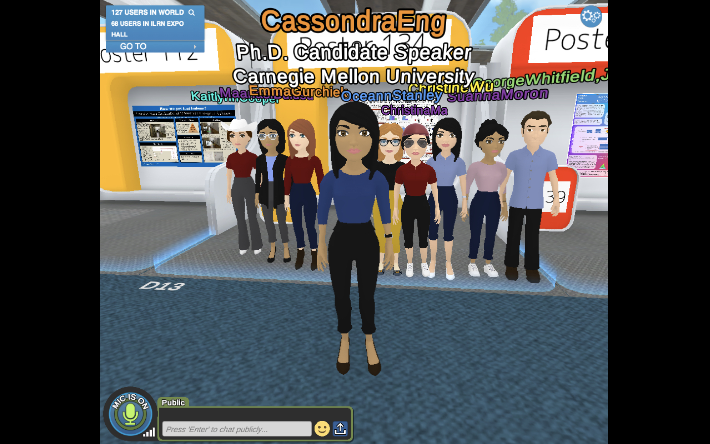
The International Conference on Immersive Learning, Virtual Conference Online and in Virtual Reality, Cognitive Development Lab
11 / 23
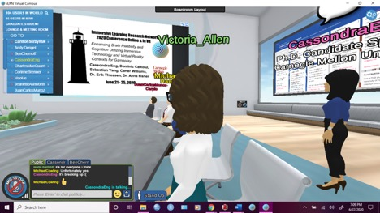
The International Conference on Immersive Learning, Virtual Conference Online and in Virtual Reality, Talk
12 / 23
The International Conference on Immersive Learning, Virtual Conference Online and in Virtual Reality, Poster Presentation
13 / 23
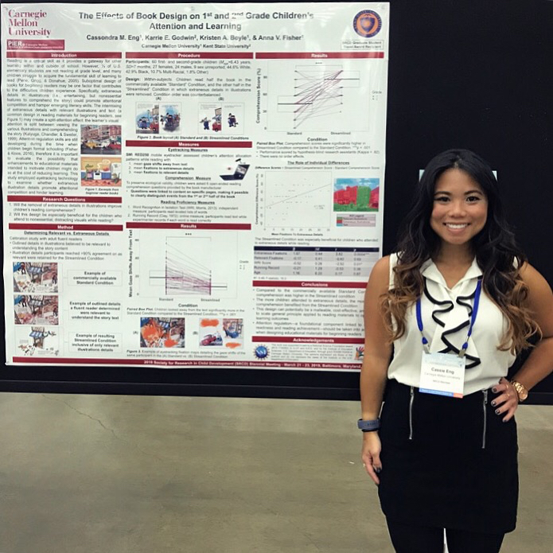
The Society for Research in Child Development Meeting, Baltimore, MD
14 / 23
The 51st International Society for Developmental Psychobiology Meeting, San Diego, CA
15 / 23
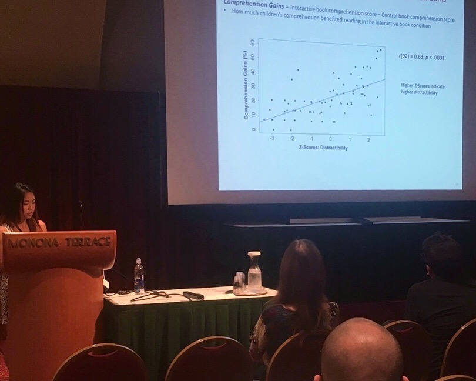
The 40th Annual Conference of the Cognitive Science Society, Madison, WI
16 / 23

Carnegie Mellon University’s 2018 Meeting of the Minds Undergraduate Research Symposium, Pittsburgh, PA
17 / 23
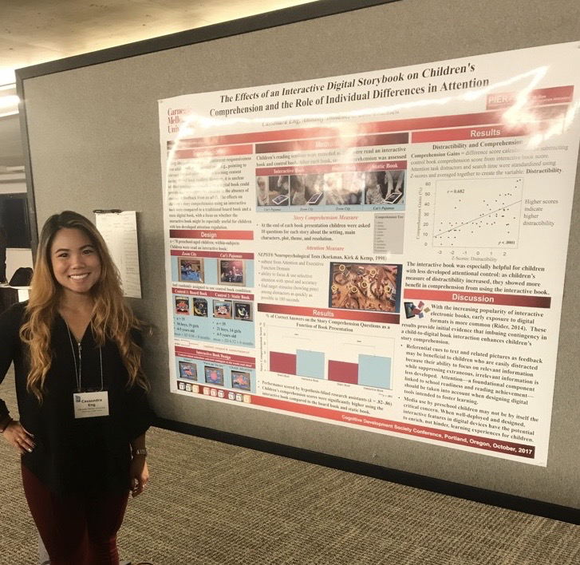
The Cognitive Development Society Conference, Portland, OH
18 / 23

The Jean Piaget Society Annual Meeting: Technologies & Human Development, San Francisco, CA
19 / 23
The 49th International Society for Developmental Psychobiology Meeting, San Diego, CA
20 / 23
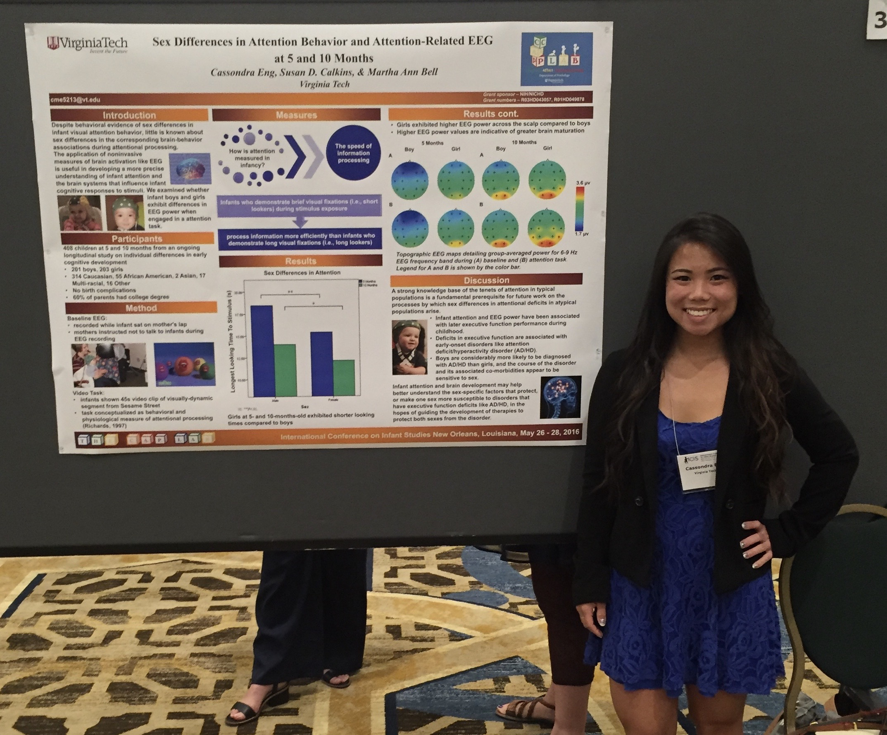
The Biennial International Conference on Infant Studies, New Orleans, LA
21 / 23
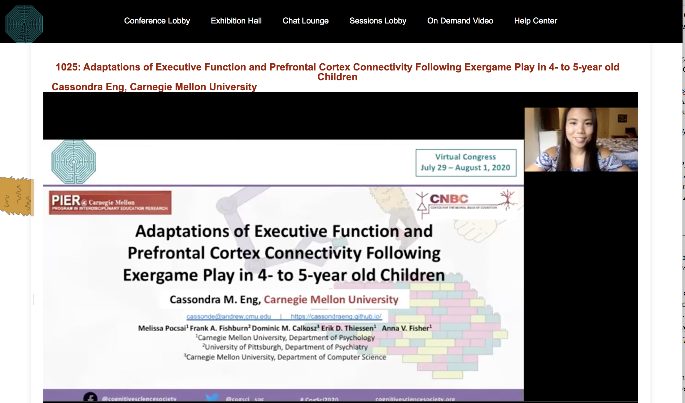
The 42nd Annual Virtual Conference of the Cognitive Science Society
22 / 23
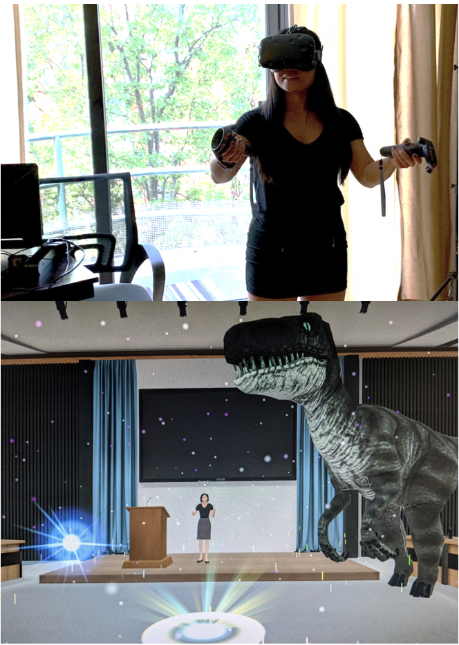
Invited Speaker in virtual reality at the Career Professional Development in VR Series: How Active VR Games Contribute to Learning Symposium
23 / 23
Invited Speaker in virtual reality at the Career Professional Development in VR Series: How Active VR Games Contribute to Learning Symposium